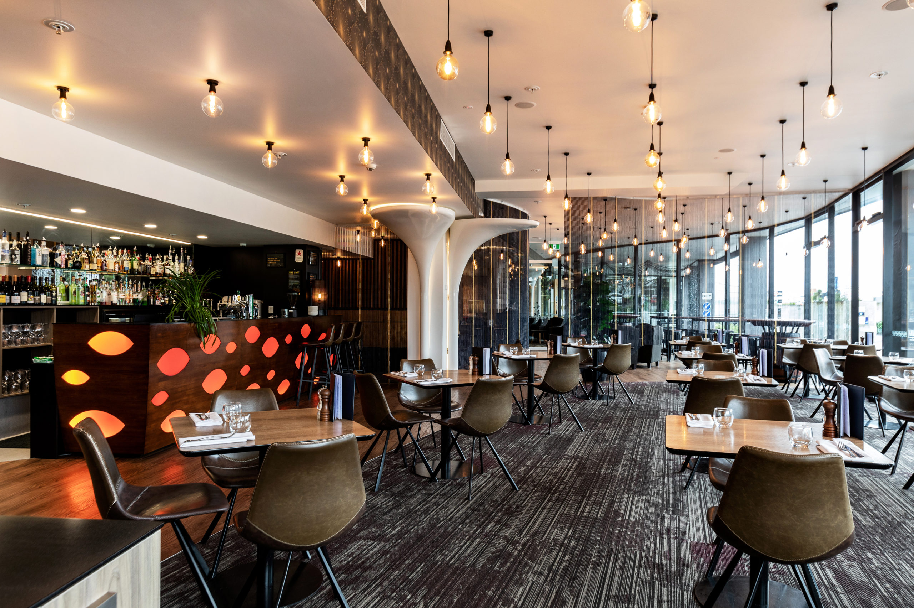

Welcome to Haukai Restaurant, where the rich flavors of Māori kai and the warm spirit of Te Ao Māori come together in the heart of the Bay of Islands. Founded by a passionate couple driven by their love for the culture and cuisine of Aotearoa, Haukai is a culinary and cultural experience like no other.
Haukai Restaurant is the realization of a dream, a dream that was nurtured by the desire to share the authentic tastes of Māori and Pākeha kai with both locals and visitors to this beautiful region. The owners, who are wholeheartedly committed to their vision, are actively involved in every aspect of the restaurant, ensuring that the essence of their dream is woven into every dish and experience we offer.
At Haukai, our evening menu is a fusion of Māori and Pākeha culinary traditions, lovingly prepared to tantalize your taste buds. Whether you're savoring traditional Māori dishes or exploring contemporary flavors, every bite is a journey through the diverse tastes of New Zealand.
